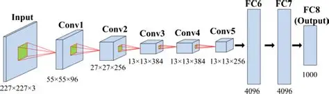

2012 em diante — A explosão do aprendizado de máquina
Depois de décadas de altos e baixos na pesquisa de Inteligência Artificial — períodos conhecidos como "invernos da IA", quando o financiamento e o interesse minguavam por falta de
resultados práticos —, o ano de 2012 marcou uma virada histórica. Uma rede neural chamada AlexNet, desenvolvida por pesquisadores como Geoffrey Hinton na Universidade de Toronto,
venceu uma competição de reconhecimento de imagens com uma margem tão grande que reacendeu o interesse mundial pelo aprendizado de máquina.


Mudanças com o surgimento do aprendizado de máquina
A funcionalidade central dessa abordagem é fundamentalmente diferente da programação tradicional descrita nos eventos anteriores: em vez de um programador escrever regras explícitas
dizendo exatamente o que o computador deve fazer em cada situação, o sistema é treinado com uma quantidade enorme de exemplos — milhares ou milhões de imagens, no caso do AlexNet —,
e ele próprio ajusta seus parâmetros internos até aprender a reconhecer padrões sozinho.

O impacto foi acelerado nos anos seguintes: essa década de avanços é a base direta de tudo que hoje chamamos de Inteligência Artificial aplicada no dia a dia — de reconhecimento facial em
celulares a assistentes de voz.
MACHINE LEARNING
o aprendizado de máquina deixou de ser um campo acadêmico de nicho e passou a estar presente, de forma quase invisível, em recomendações de vídeos, diagnósticos médicos assistidos
por computador e em praticamente qualquer aplicativo moderno que "aprende" com o comportamento do usuário.